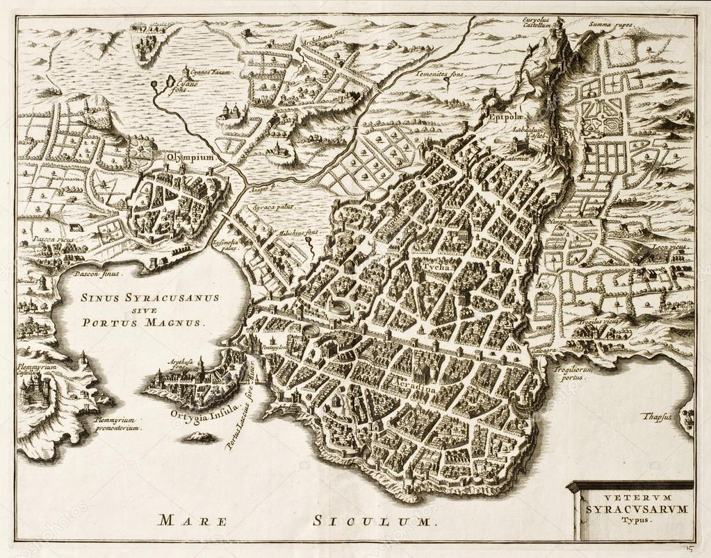
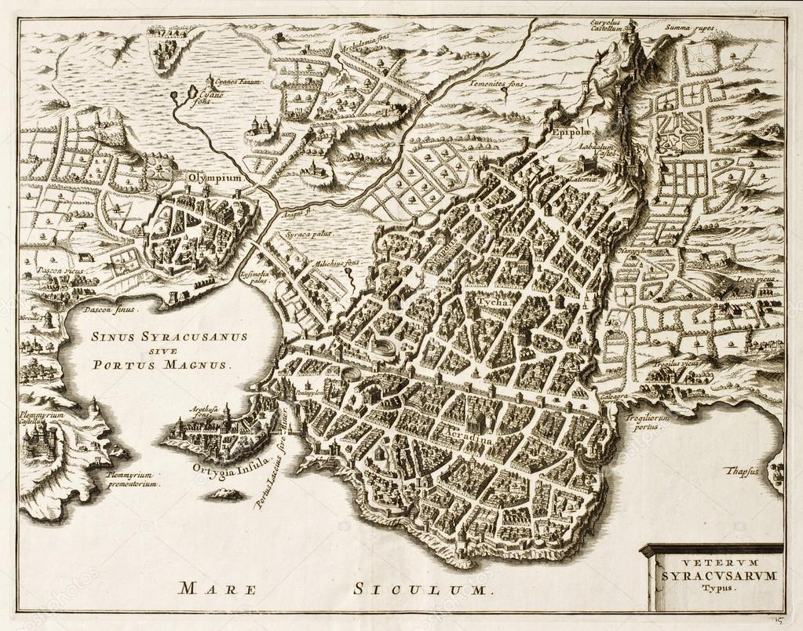

MADE LABS, SIRACUSA
2017DECONSTRUCTING RECONSTRUCTION
COLLECTIVE SCULPTURES LOCAL RESEARCH
Deconstructing Reconstruction is the outcome of Made–Labs workshop in Syracuse.
It questioned the impact of reconstruction plans of towns that were destroyed by earthquakes in Sicily.
Three typologies of rebuilding took place: move the town to a new site, rebuild at the same site with a completely
new town plan or rebuild using the existing town plan.
When is it appropriate to start over again from scratch? How do we preserve authenticity within reconstruction?
When is the erosion or partial demolition more iconic or important than the original state?
Which memory takes priority? How can homage be payed to an existing notion when starting over from scratch?
Alongside the discussion on the matter, we extracted and applied the key notions to a variety of material explorations, in a collaborative creation and exchange of artifacts.


 
